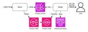
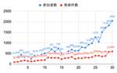

Money Forward Developers Blog
https://moneyforward-dev.jp/
株式会社マネーフォワード公式開発者向けブログです。技術や開発手法、イベント登壇などを発信します。サービスに関するご質問は、各サービス窓口までご連絡ください。
フィード

メール送信基盤の最適化：アーキテクチャ再設計で達成した劇的なパフォーマンス改善 1
1
Money Forward Developers Blog
はじめに こんにちは。CTO室基盤アプリケーション部の斉藤といいます。フクロウが好きなので、社内やGitHub上ではフクロウさんアイコンで生息してます。 さて、自分は様々なプロダクトから利用される共通基盤となるマイクロサービスの運用開発を行っています。 去年、メール送信基盤サービスの性能改善のためのアーキテクチャの刷新に取り組み、メール送信速度を3倍以上、レスポンスを約20%高速化、そしてコストを約75％削減に成功しました。この記事では、このアーキテクチャ刷新について紹介していこうと思います。 旧アーキテクチャと課題点 このサービスは当初プロトタイプとして開発されたものだったので、利用プロダク…
2日前

NLP2024に参加してきました！ 2
Money Forward Developers Blog
Money Forward Labで自然言語処理のリサーチャーをしている山岸（@hargon24）です。 この記事では、Labから発表 & プラチナスポンサーとして参加した、言語処理学会第30回年次大会（NLP2024）の参加報告をします。 NLP2024とは 言語処理学会年次大会は、自然言語処理（NLP）の研究者・技術者が年に一度集まって研究発表をしたり議論したり、懇親したりする国内最大級のイベントです。 今年は第30回で、3月11日から3月15日まで神戸ポートアイランドの神戸国際会議場で行われました。 大会運営が当日公開していた参加者数と発表者数のグラフです。今年の参加者数の数値は事前申込…
6日前
アクセシビリティ向上への3つの心構え 1
Money Forward Developers Blog
こんにちは、フロントエンド推進グループの@taigakiyokawaです。横断組織のフロントエンドエンジニアとして、アクセシビリティガイドラインの作成や共通UIライブラリの開発を行っています。 今回は、社内の全エンジニア向けに発表した、アクセシビリティへの意識向上を目的としたプレゼンテーションの内容をブログとして紹介していきます。 The same article in English is here アクセシビリティ向上への3つの心構え まずはじめに、今回の要点です。 低いアクセシビリティは 「システム障害」 できるところから地道に アクセシビリティは「対応」するものではなく 「向上」 させ…
9日前

開発者体験サーベイ、めっちゃよかったんで、おすすめです
Money Forward Developers Blog
エンジニアリング戦略室の高井といいます。 みなさん、開発生産性を高めていますか？ 近頃、開発生産性という言葉をよく聞くようになってきました。開発生産性について書かれたブログや技術イベントでの発表を目にする機会が増えています。これはソフトウェアの重要性が高まってきていることや、またアメリカの金利政策によってマクロ経済状況が変化したという背景が影響しているようにも感じます。開発生産性という言葉がバズワードのようになりつつあります。 誰もが重要だと考えている開発生産性ですが、それが何であるのか、またどのように改善していくのか、という具体的な話になると喧喧諤諤の議論になってしまうようです。開発生産性と…
21日前
社内のモバイルエンジニアが大集合したMobile Engineer All Handsを開催しました
Money Forward Developers Blog
こんにちは。Androidエンジニアの宮本です。 マネーフォワード クラウド確定申告アプリの開発を担当しています。 本記事では1月21日に開催したMobile Engineer All Handsというイベントのレポートをお届けします。 Mobile Engineer All Hands マネーフォワードにはiOS、Android、Flutterエンジニアを含めて多数のモバイルエンジニアが在籍しています。 各プラットフォームはそれぞれ定期的に情報共有会を行っており、プロダクトの開発状況や技術トピックについてディスカッションを行っています。 一方で、異なるプロダクト、プラットフォーム間のエンジニ…
1ヶ月前
ガーディアングループでの1年を振り返って〜問い合わせ対応で大事な5つの考え方と、エンジニアとしての3つの成長〜
Money Forward Developers Blog
こんにちは。滝行をしてみたくてたまらない、 クラウド経費開発チーム ・ クラウド債務支払開発チーム の 野邉（べーやん）です。 ガーディアングループに配属になってから1年が過ぎたので、この1年を振り返ろうと思います。 ガーディアングループは何をしているのか ガーディアングループは「マネーフォワードクラウド経費」「マネーフォワードクラウド債務支払」の運用・保守 / 改善を行っています。 運用・保守業務では、システムのエラー監視を行いつつ、カスタマーサポートやカスタマーサクセスなど、ビジネスサイドからの技術的調査が必要な問い合わせの対応をしています。 改善活動では、中小規模の機能追加や、開発生産性…
1ヶ月前
サービス基盤本部が考える「成長する開発組織の戦略ストーリー」
Money Forward Developers Blog
はじめに こんにちは。サービス基盤本部長の鈴木です。 サービス基盤本部は、マネーフォワードが開発するサービス自体やそれを開発のためのプラットフォームや技術支援を通し、マネーフォワードの提供するサービスの安定化と開発にかかる生産性を最大化することがミッションです。 常々、プラットフォームはそれ単体ではなく、それを利用する開発組織とセットで考えなくてはいけないと思ってます。とてもありがたいことにマネーフォワードの開発組織はサービスの成長と共に成長し続けており、それに伴い変化する課題に、難しさとやり甲斐を感じています。このブログでは、過去、現在、将来においてサービス基盤本部がどのように開発組織を捉え…
1ヶ月前
【graphql-ruby】RelayConnectionのPageInfoに任意のfieldを追加する
Money Forward Developers Blog
こんにちは、クラウド債務支払でバックエンドエンジニアをしている@いいねです。 graphql-rubyを採用しているプロダクトで、ページネーションを実装したいというケースはよくある話だと思います。 graphql-rubyではRelayConnectionを用いたページネーション機能が提供されており、開発者はこれを使って簡単に実装することができます。 しかし、標準で用意されているPageInfo型では、ページネーションのコンテキストにおいて必要な全ての情報を提供していない場合があります。 例えば、クライアントがリストの総アイテム数を知りたいと思った場合PageInfoにはその情報が含まれていま…
1ヶ月前
AWS Cloud Questをやってみた
Money Forward Developers Blog
こんにちは。クラウド経費でエンジニアの小林です。 今回は、AWS Cloud Questを試してみたので、その感想をシェアしたいと思います。 AWS Cloud Questの概要 AWS Cloud Questは、Amazon Web Services（AWS）のクラウド技術を学ぶためのロールプレイングゲームです。 実際のAWSの環境で手を動かしながら、クラウド技術の基本から応用までを学ぶことができます。そのため、知識だけでなく実践的なスキルも身につけることが可能です。 AWS Cloud Questを試そうと思った背景 私がAWS Cloud Questを試そうと思った背景には、いくつかの理…
1ヶ月前
パスキー利用状況レポート @ マネーフォワード ID (vol.4, Feb 2024)
Money Forward Developers Blog
English version of this article is available here. はじめに こんにちは、マネーフォワード ID 開発チームの @nov です。 さて、みなさま、バレンタインデーいかがお過ごしでしょうか？ おおよそ四半期毎のペースで公開している、パスキー利用状況レポートの時期がやってきました。 この3ヶ月、マネーフォワード ID ではパスキー周りで以下のような変化がありました。 パスキーでのログイン数が Google Sign-in を超えて、パスワードに次ぐ第二位のポジションへ ログイン直後以外のコンテキストでのパスキープロモーションを開始 パスキープロモー…
1ヶ月前
最近のGoの後方互換性について（2024年も積極的にバージョンアップしよう）
Money Forward Developers Blog
こんにちは！マネーフォワードエックスカンパニー 個人サービス開発部 バンキングアプリ開発グループの仲川です。 みなさん2024年は気持ち良くスタートを切れたでしょうか？私は年始の初売りセールでスマートロックを購入して自宅に取り付けたんですが、施錠が機能していないことに全く気づかず、1週間ほどノーガード状態で「鍵のある生活から解放された！」と浮かれて過ごしていました。 さてソフトウエアエンジニアにとって鍵より煩わしいのは、後方互換性のないソフトウエアのバージョンアップ作業だと思います。今回のテーマはそんな後方互換性についてです。 Goでは2023年にリリースされたv1.21で後方互換性を向上させ…
2ヶ月前
エンジニアのコミュニケーション課題をAWS GameDayで改善しろ！ 〜企画・運営編〜
Money Forward Developers Blog
TL;DR この記事は「エンジニアのコミュニケーション課題をAWS GameDayで改善しろ！ 〜イベントレポート編〜」で宣言していた運営、企画編です。 下記記事とは視点を変えて社内企画として取り組んだAWS GameDayについてお伝えしようと思います。 moneyforward-dev.jp この記事では社内イベントを通して、エンジニアにどのような価値を届けたいと考え、企画したかの裏側や思想、背景について記載をしています。 企画時点での課題や考え方であるため、歴史的遠近法により当時と現在で前提や背景が変わっている可能性があります、ご了承ください。 1 普段、知る機会が少ない社内イベントの裏…
2ヶ月前
houou (鳳凰):理研 ichikara-instruction データセットを用いて学習された大規模言語モデル
Money Forward Developers Blog
Posted by Atsuhi Kojima, Researcher, Money Forward Lab. この記事では自然言語処理に興味がある、あるいは研究開発に携わっているエンジニアや学生の方に向けて、マネーフォワードの研究機関である Money Forward Lab が取り組んでいる Large Langugage Model (LLM) の研究開発についてご紹介します。 LLM の指示追従性を向上させる学習手法として Supervised Fine-Tuning (SFT) があります。SFT モデルは、prompt と completion のペアで構成されるインストラクション…
2ヶ月前
trilogy を調査したら Active Record が抱える問題にまで辿り着いた
Money Forward Developers Blog
はじめに あけましておめでとうございます。k0iです。 皆さんは年末年始、いかがお過ごしでしたでしょうか。 私は久しぶりに会った高校の友達と飲んで帰省の列車に乗り遅れ、更にスマホを落として壊してしまい中々痺れる年越しとなりました。 2024年も良い年になると良いですね.....! さて、Rails 7.1 で trilogy という MySQL 互換の Database Adapter が追加されました。 しかし我々はすでに MySQL 互換の Database Adapter として mysql2 を使っています。 一体なぜ新しい Adapter が必要なのか。trilogy は何を解決する…
3ヶ月前
今年も継続決定！ ～エンジニア・デザイナーの名古屋、関西（京都・大阪）、福岡へのUIターン費用サポートキャンペーン実施のお知らせ～
Money Forward Developers Blog
こんにちは、マネーフォワード採用担当の新井です。 昨今新しい働き方が注目されている中でマネーフォワードでは、 「各国内開発拠点へUIターンされる方への応援をしたい、UIターンして拠点を盛り上げてくれる方のサポートをしたい！」という想いから、 名古屋、関西（京都・大阪）、福岡の地方開発拠点へ入社いただく方へ「UIターン費用サポート」を行っています。 2020年からスタートしたキャンペーンですが、好評につき今年も継続が決定しました🎉 今回はそのサポートの内容を紹介させて頂きます！ moneyforward-dev.jp moneyforward-dev.jp moneyforward-dev.jp…
3ヶ月前
Passkey の動向 2023年ふりかえり
Money Forward Developers Blog
はじめに こんにちは、マネーフォワード ID 開発チームの @nov です。 2023年はマネーフォワード ID として本格的にパスキーのサポートを開始した年でした。 2023年4月にリリースしたマネーフォワード ID のパスキー実装ですが、2023年末の時点でマネーフォワード ID へのログインアクションの7%ほどがパスキーによるログインになっており、Google Sign-in や Sign in with Apple などを抜いてパスワードに次ぐ第二位の認証手段となっています。 この一年で、Money Forward Developers Blogにも、最初に Passkey Autof…
3ヶ月前
Money Forward Developers Blog Award 🎉 この1年で多く読まれた記事を紹介します！
Money Forward Developers Blog
こんにちは、採用広報のachaです✌️ マネーフォワードでは11月が事業年度末となり、12月から新しい年度が始まっています。 先日社内でMoney Forward Developers Blogの投稿数やPV数を軸に表彰する「Money Forward Developers Blog Award」を行いました。 その中のPV数部門で表彰したトップ10の記事を紹介できればと思います。 ブログを通して、この1年間のできごとをふりかえるきっかけになれば嬉しいです。 【1位🥇】ChatGPTのAPIがオープンになったのでSlackに分身を配置した話 この1年は、ChatGPTをはじめとした生成AIが大…
3ヶ月前
マネーフォワード CTO が考えていること（2023 年 12 月）
Money Forward Developers Blog
こんにちは、マネーフォワード CTO の中出（なかで）です。 CTO の私が、普段「なにを感じて、どんなことを考えているか」について、四半期に一回社内へ共有している内容を一部編集し、 Developers Blog に公開したいと思います。 前回はこちら：マネーフォワード CTO が考えていること（2023 年 9 月） 技術的負債とその返済 7年前、2016年12月にCTOになって、最初の大きな決断は、すべてのサービスが一つの大きなデータベースに依存している状態から抜け出すことでした。私たちは小さなベンチャー企業でしたから、素早くサービスを立ち上げるためにデータベースを分割せず、大きなデータ…
3ヶ月前
アンチパターンから理解を深めるrepeatOnLifecycle
Money Forward Developers Blog
この記事は、Money Forward Engineering 2 Advent Calendar 2023、22日目の投稿です。 こんにちは、マネーフォワードホームカンパニーでモバイルエンジニアをやっている nyafunta9858 です。 この記事では、Android Jetpackで提供されているAPIのひとつ、repeatOnLifecycleについてアンチパターンから理解を深めてみたいと思います。 実はこのテーマは、DroidKaigi 2023にて筆者が出題したコードクイズのテーマのひとつでもあったので、その際のクイズを題材にして解説していきます。 年末に向けて忙しくされている皆さ…
3ヶ月前
新卒がアウトプット駆動に挑戦して得たものとその勘所
Money Forward Developers Blog
この記事は、Money Forward Engineering 1 Advent Calendar 2023 21日目の投稿です。 20日目は宮村（みやむー） @miyamura.koyoさんで【Ruby】今年も福岡拠点で ISUCON13 に参加しました！でした。 こんにちは、fujiyamaorangeです。普段は福岡拠点にてマネーフォワードPay for Businessのフロントエンド開発を担当しています。 ※本記事内で登場するアウトプットは「技術記事を書くこと」を指します。 いつもならこういったタイトルの記事では最初に結論を持ってきて、それから詳細を説明していくのですが、今回は最後ま…
3ヶ月前
【Ruby】今年も福岡拠点で ISUCON13 に参加しました！
Money Forward Developers Blog
この記事は、Money Forward Engineering 1 Advent Calendar 2023の20日目の記事です。 19日目は福岡拠点のスーパー新卒 wozitto 氏の"marginではなく、レイアウトを指定しよう ~ レイアウト手法 Stack、Clusterの紹介 ~"でした。 こんにちは クラウド経費開発チーム ・ クラウド債務支払開発チーム の 宮村（みやむー） @miyamura.koyo です。 昨年 マネーフォワード福岡拠点 で ISUCON12 に参加しました！ moneyforward-dev.jp そしてもちろん、今年も参加します！ Ruby で！というこ…
3ヶ月前
リリース時のコミュニケーションコストを Slackbot で解決した話
Money Forward Developers Blog
この記事は、Money Forward Engineering 2 Advent Calendar 2023 19 日目の投稿です。 18 日目は Dai さんで Next GenerationなAndroidアプリのデプロイSlack Appを作ってみた でした。 こんにちは、マネーフォワード関西開発拠点でクラウド会計Plus のエンジニアをしている mici です。 私たちのチームでは、ある機能を本番リリースする際に、関係する開発者全員に確認をとる必要があり、リリース時のコミュニケーションコストが大きいという課題がありました。 この記事では、この課題を Slackbot を使うことでどのよ…
3ヶ月前
Next GenerationなAndroidアプリのデプロイSlack Appを作ってみた
Money Forward Developers Blog
この記事はMoney Forward Engineering 2 Advent Calendar 2023 18日目の投稿です。 15日目はtatsuo48さんの TerraformコードのレビューをAIにさせてみた でした。 こんにちは。Androidエンジニアの宮本です。 マネーフォワード クラウド確定申告アプリの開発を担当しています。 本記事ではSlackの「次世代プラットフォーム機能 (以下、next-generation platformと呼びます)」 を使って、AndroidアプリをFirebase App Distributionにデプロイするまでの自動化について紹介します。 以…
3ヶ月前
小さいプルリクエストを作る技術
Money Forward Developers Blog
この記事は、Money Forward Engineering 1 Advent Calendar 2023の18日目の記事です。 15日目はSammyさんの"マネーフォワード SDETインターンの魅力とは？"でした。 初めに こんにちは、Taskと申します。 普段はマネーフォワードクラウド連結会計のバックエンドエンジニアとして、大阪開発拠点にて勤務しています。 今年の7月にマネフォに転職してきたのですが、開発生産性を上げる仕組み、特に小さいプルリクエスト（PR）を作り、頻繁にmainブランチに取り込むための取り組みがおもしろいなと感じたので紹介させていただきます。 なぜPRを小さくする必要が…
3ヶ月前
マネーフォワード SDETインターンの魅力とは？
Money Forward Developers Blog
この記事はMoney Forward Engineering Advent Calendar 2023 15日目の投稿です。 こんにちは！マネーフォワードでQAエンジニアをしているSammyです。 2023年の9月に、初めてSDET（Software Development Engineer in Test）インターンを実施しました。 「SDETってどんな職種？」 「マネーフォワードでの品質系のインターンってどんなことをするの？」 マネーフォワードのエンジニアインターンシップに興味がある方向けに、インターンに応募し実際に参加していただいた方のお話をします。 背景、前提 SDETとは？ マネーフ…
3ヶ月前
技術的負債解消チームで1年半活動して分かった、動くコードを削除する大変さ
Money Forward Developers Blog
この記事はMoney Forward Engineering 2 Advent Calendar 2023の14日目の投稿です。 前日はnakamoriさんで Airflowの新機能Airflow Datasetによる新しいデータリネージでした。 はじめに こんにちは！HiroVodka です。 私は2022年6月1日にマネーフォワードへ中途入社し、そこから約1年半の間、『桃園の誓いアーキテクチャ』と呼ばれている技術的負債解消活動を行ってきました。 桃園の誓いアーキテクチャについては、CTOのブログを読んでいただければと思います。 CTOになって5年経った感想、振り返りなど - Money F…
3ヶ月前
品質改善に向けたワーキンググループをQAエンジニアで立ち上げてみた話
Money Forward Developers Blog
CQO室の nishijo（@jojojo_no_jo）です。こんにちは。 主に「マネーフォワード クラウド」の開発を行う部署のマネーフォワードビジネスカンパニーでは、2023年3月からCQOの 池田 暁 のもと、品質Forwardを実現するためのワーキンググループ（以下、WGと称す）を立ち上げて活動を続けてきました。 今回は準備会として位置づけた3月から11月までのWG活動内容をレポートします！ 前提条件や目的 まず、立ち上げる際の前提や目的について紹介しようと思います。 前提として、2023年に取り組んできたWGは具体的な改善を第一の目的としていません。「タイトルに”品質改善に向けた”って…
3ヶ月前
必見！？JaSST'23 Kyushuの舞台裏全部お見せしちゃいます
Money Forward Developers Blog
この記事はMoney Forward Engineering 1 Advent Calendar 2023の13日目の投稿です。 前日は仲川さんで、クイズでGo！panic（runtime error）が発生するのはどんな時？でした。 その他にもたくさんのテックブログが公開されています！ぜひご覧ください！ Money Forward Engineering 2 Advent Calendar 2023 PG BATTLE 2023に参加しました Money Forward Fukuoka Advent Calendar 2023 40歳目前デザイナーに訪れた転職の話 Money Forward…
3ヶ月前
PG BATTLE 2023に参加しました
Money Forward Developers Blog
この記事は、Money Forward Engineering 2 Advent Calendar 2023、12日目の投稿です。 こんにちは！マネーフォワードでエンジニア採用広報をしているachaです。 このブログでは2023年10月21日（土）に行われた、企業・学校対抗のプログラミングバトル PG BATTLE 2023 に参加した際の様子を紹介します。 products.sint.co.jp PG BATTLE 2023とは PG BATTLEは、企業・学校対抗プログラミングコンテストです。 1チーム3名でエントリーし、「ましゅまろ(簡単)」「せんべい(普通)」「かつおぶし(難しい)」と…
4ヶ月前
クイズでGo！panic（runtime error）が発生するのはどんな時？
Money Forward Developers Blog
こんにちは、マネーフォワードエックスカンパニー 個人サービス開発部 バンキングアプリ開発グループの仲川です。この記事は Money Forward Engineering 1 Advent Calendar 2023 の12日目の投稿です。 突然ですが、クイズです！ Q：Go言語ではどのような実装を行うとpanic（runtime error）が発生するでしょうか？また、それらの発生自体を防ぐにはどうすれば良いでしょうか？ 少しだけ手を止めて考えてみてください... さて、いくつ思いつきましたか？ 熟練のGoエンジニアなら、5つ以上の実装パターンと対策がすぐに思い浮かんだでしょう。しかし、実務…
4ヶ月前